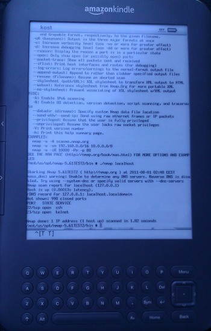

Porting to Android
Porting your favourite cmdline tool to Android
Vlatko Kosturjak (@k0st), Droidcon Zagreb, 30th of April
Agenda
- Introduction
- Native code
- Toolchains
- Things I wish I knew in advance
- Calling native executables
- Issues and implications
- Summary
- Questions and answers
45 minutes
About me
- Security Consultant in Diverto
- Linux and FLOSS enthusiast
- Open source developer
- Have code in OpenVAS, Nmap, Metasploit, ...
- https://github.com/kost
- Android "developer" since 2010
- started counting from first Market app
- mostly focused on NDK and ADK
About me in pictures

About me in pictures


Introduce elephant
- Talk will cover
- producing standalone binaries
- executing standalone binaries
- Talk is mostly about Nmap experience
- Most Nmap frontends on playstore are using this port
- in source or binary form
- https://github.com/kost/nmap-android
- https://github.com/kost/NetworkMapper
- Talk will NOT cover
- producing libraries or JNI
- integrating with Android Studio
Native code
- NOT your Java code :)
- It's mostly about
- C/C++
- Assembler
- Not portable across platforms
- For each platform, you need different binary
- x86
- arm
- mips
Why bother with native code?
- performance
- legacy code
- code reuse
- you just need that tool
What's the process?
- compiling
- compiling on same machine
- cross-compiling
- compiling on (host) machine for other (target) machine
Toolchains
- Android NDK
- Commercial
- Open Source
- Custom
Custom toolchain
- Your own version of compiler
- Your own version of build scripts
- Custom
Commercial
- Embarcadero
- Good old Borland...
- Xamarin
- Native apps in C#
- ...
Open Source / Free
- Crystax
- drop-in replacement for Google's NDK
- WCHAR, locales, full C+11 standard library...
- Buildroot
- Standard embedded cross compilation toolchain
- ARM, x86, MIPS
- Scratchbox
- ARM, x86, MIPS (experimental)
- Anyone remembers Maemo? :)
- ...
Android NDK
- Android official toolchain
- Available for free from developer.android.com
- Bionic
- No full ANSI C support
- locale
- different threads
- Patch as you grow
- standalone binary support/bugs
- stdout symbol bug
- WCHAR support
- standard library support
What's the fuzz?
- Download NDK
- Download tool you want to port
./configure --host=arm-linux-androideabi
make
make install
- It works - go home!
In case it is hello world...
/* Hello World program */
#include <stdio.h>
void main()
{
printf("Hello World");
}
It works pretty well indeed.
In real world
- Code isn't perfect
- Not portable
- Endianess
- Path Separators
- Dependencies
- Extensions
- 3rd party libraries
Two ways to invoke compiler
- Calling with sysroot
export CC="$NDK/toolchains/arm-linux-androideabi-4.6/prebuilt/linux-x86/bin/arm-linux-androideabi-gcc"
export CFLAGS="--sysroot=$SYSROOT"
$CC $CFLAGS -o hello hello.c
- Producing directory for target
$NDK/build/tools/make-standalone-toolchain.sh --platform=android-3 --install-dir=/opt/ndk3
/opt/ndk3/bin/arm-linux-androideabi-gcc -o hello hello.c
NDK platforms
| NDK platform | Platforms | 32/64 bit |
|---|---|---|
| 3 | ARM | 32 |
| 9 | ARM/MIPS/Intel | 32 |
| 21 | ARM/MIPS/Intel | 64 |
Process of cross compiling
- Compile and fix as you go :)
- sorry, no single recipe
- Standard problems
- stdout bug
- old autoconf/automake support files
- arm-linux-androideabi missing
- In short
- nothing that google/stackoverflow can't help :)
Static vs Dynamic linking
- Dynamic
- small size
- run-time dependency
- Static
- large size
- no dependencies
Life is perfect
Static binaries working like a charm
“until resolv.conf disappeared :) ”
DNS problems
int main(int argc,char *argv[]) {
int i;
struct hostent *hp;
for ( i=1; i<argc; ++i ) {
hp = gethostbyname(argv[i]);
if ( !hp ) {
fprintf(stderr, "%s: host '%s'\n", hstrerror(h_errno),
argv[i]);
continue;
}
printf("Host:\t%s\n" ,argv[i]);
printf("\tResolves to:\t%s\n", hp->h_name);
}
}
Original at gist
DNS and resolv.conf
#ifdef ANDROID_CHANGES /* READ FROM SYSTEM PROPERTIES */
dns_last_change_counter = _get_dns_change_count();
[..]
#else /* !ANDROID_CHANGES - IGNORE resolv.conf in Android */
#define MATCH(line, name) \
[..]
Original at https://code.google.com/p/android-source-browsing
Dynamic vs Static
| Type | Size | Dependency | DNS OOTB |
|---|---|---|---|
| Dynamic | smaller | yes | yes |
| Static | bigger | no | no |
| Mixed | medium | yes (basic) | yes |
Here comes Lolipop
error: only position independent executables (PIE) are supported.
- Position Independent Executable (PIE)
- PIE support appeared in API level 16
- Finally they implemented it :)
- Too bad binaries does not work
What's PIE?
- Position Independent Executable (PIE)
- Security protection
- better Address Space Layout Randomization (ASLR)
- Exploitation mitigation technique
- Harder return-to-libc exploitation
- Requirements
- PIE required for dynamic executables
- PIE not required for static executables
PIE example
#include <stdio.h>
int global;
int checkadr (int *bla)
{
int local;
printf("bla adr = %p\n", &bla);
printf("global adr = %p\n", &global);
printf("local adr = %p\n", &global);
}
int main (void) {
int c;
printf("c adr = %p\n", &c);
printf("checkadr adr = %p\n", &checkadr);
checkadr(1);
}
PIE support
| Android version | Supported | Required |
|---|---|---|
| 1,2,3 | no | no |
| 4 | yes | no |
| 5 | yes | yes |
PIE workaround
- Way to run PIE executables on non supported systems
- if system suppports PIE
- just run executable
- if system does not suppport PIE
- use run_pie.c
- run_pie your_proggy args
CFLAGS +=-fvisibility=default -fPIE
LDFLAGS += -rdynamic -pie
Calling native executables
p = Runtime.getRuntime().exec(command);
p.waitFor();
BufferedReader reader = new BufferedReader(new InputStreamReader(p.getInputStream()));
String line;
while ((line = reader.readLine()) != null) {
output.append(line).append("\n");
}
Better way - using ProcessBuilder
ProcessBuilder processBuilder = new ProcessBuilder(shellToRun);
processBuilder.redirectErrorStream(true);
scanProcess = processBuilder.start();
outputStream = new DataOutputStream(scanProcess.getOutputStream());
inputStream = new BufferedReader(new InputStreamReader(scanProcess.getInputStream()));
while (((pstdout = inputStream.readLine()) != null)) {
output.append(pstdout).append("\n");
}
Running binaries as root
- Not needed to set any new android permission
- Historic references to SUPERUSER permissions
- Not much different than executing as normal user
- Have to Runtime.getRuntime().exec("su")
- Write commands to stdin of process
- Loop the output
Root implications
- Killing run away root processes
- Hard as it can be due to blocking nature
- UI does not have root access
- Killing spawned root processes
- parse ps output
- spawn su shell
- kill process
Security implications
- Native binary problems
- Memory corruption attacks (Buffer overflows, ...)
- Format string problems...
- ...
- Permissions
- Command injections
Security implications - permissions
- Setting insecure permissions to executables/libraries
- Very common when something does not work
- Dangerous and heroic
- Other apps can write to your bin or library
- Exploitation
- Find insecure .so library, inject your code
- Find insecure binary, replace it with your version!
echo "#!/bin/sh" > /data/data/com.heroic.app/bin/mybinary
echo "echo '0wned!'" >> /data/data/com.heroic.app/bin/mybinary
Security implications - untrusted input
- Passing untrusted/unvalidated input to shell
- Running native executables can lead to command injections
- Extremely dangerous if running as user
- Extremely heroic and dangerous if running as root
- Pay special attention to exported activities
- other apps can call that intent
- which means they can execute commands as your app!!
Untrusted input example
Bundle b = getIntent().getExtras();
configFilePath = b.getString("path");
[..]
ShellExecuter exe = new ShellExecuter();
return exe.Executer("cat " + configFilePath);
<activity
android:name=".MyHeroicActivity"
....
android:exported="true" />
Untrusted input exploitation
public void onBtnClick(View view) {
Intent intent = new Intent();
intent.setClassName("com.heroic.app", "com.heroic.app.MyHeroicActivity");
intent.putExtra("path", "/system/etc/hosts; echo 'Owned' > /data/data/com.heroic.app/bin/binary");
startActivity(intent);
}
On the end..
- You get bad comments :)
- Don't use ratings for bug reports ;)
- Please submit VERBOSE bug reports to author directly
Fortunately
Fortunately, there are good comments ;)
Thanks on these
Summary
- Porting is quite possible
- Not as easy as marketing says
- You can't configure; make; make install in most cases
- Expect you'll have to patch if project is bigger
- Not that hard
- If you know requirements upfront
- Have listened to this lecture carefully
- Be aware of security implications!